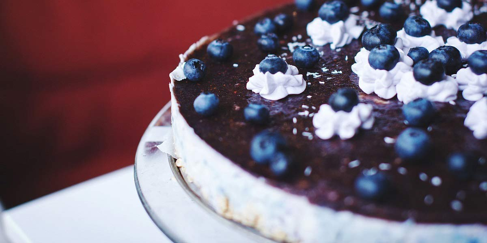

Cheese Cake
Recipe Specification
Ingredients List
| Ingredients | Quantity |
|---|---|
| Digestive Biscuits | 100g |
| Demerara Sugar | 50g |
| Unsalted Butter | 50g |
| Mascarpone Cheese | 500g |
| Icing Sugar | 100g |
| Vanilla Essence | 1 tsp |
| Double Cream | 200ml |
| Dark Chocolate | 100g |
Yield: 6-8 portions
Preparation
- Melt butter in the microwave.
- Crush digestive biscuits and add mix in demerara sugar and melted butter.
- Using a 20cm spring form cake tin, line the base with grease proof paper and the sides, with a 65cm length of grease proof paper.
- Apply the digestive crumb to the base of the tin and evenly distribute with the back of a spoon. Ensure that the digestive crumb is compacted before placing in the fridge for 15 minutes.
- Using and electric whisk, whisk the double cream to a soft peak consistency.
- Beat the mascarpone cheese with the icing sugar and vanilla essence until smooth.
- mix in 1/3 of the soft peak double cream into the mascarpone cheese until smooth and, then gently fold in the remaining soft peak double cream.
- Pour mixture on top of the digestive crumb and distribute evenly with a pallet knife.
- Grate dark chocolate on top of the cheese cake.
- Place in the refrigerator for at least 2 hours before slicing and serving.

Serving Suggestions
Serve with a cup of coffee.
Storing instructions
Cover with clingfilm and place in the fridge. Consume with 4 days of making.